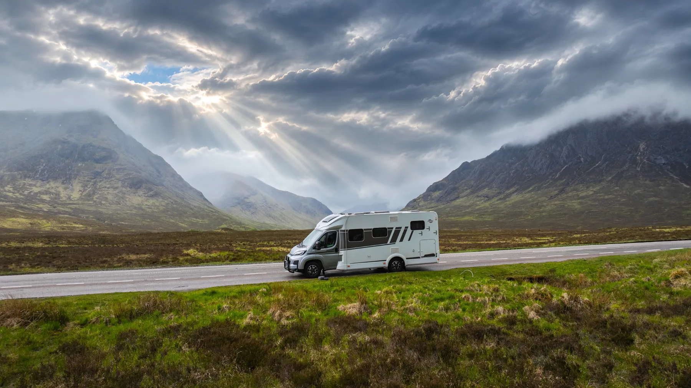
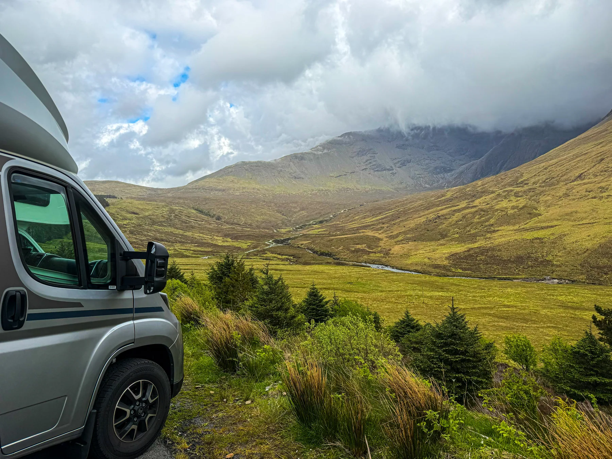
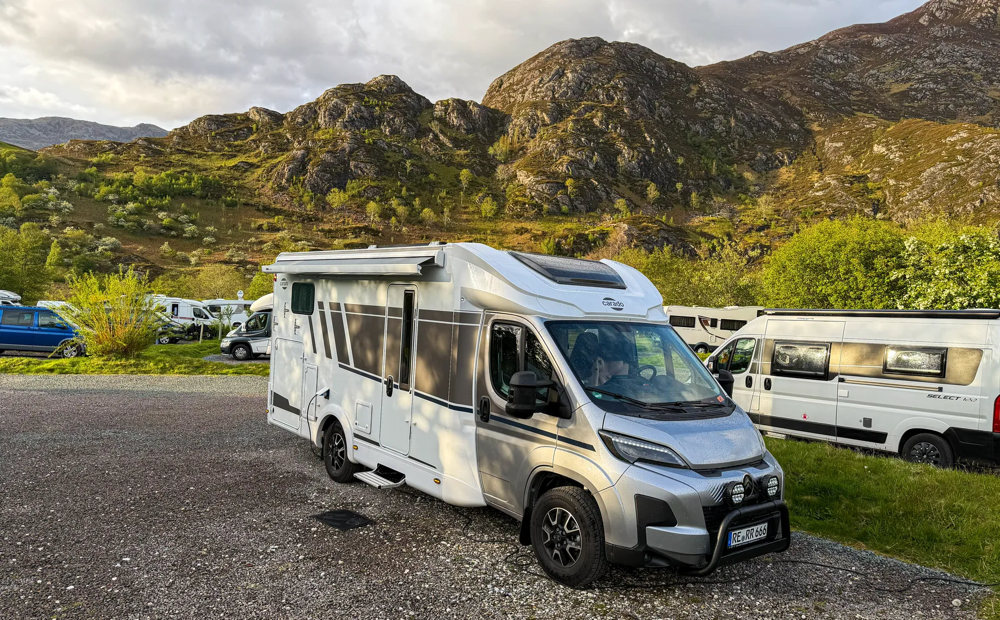
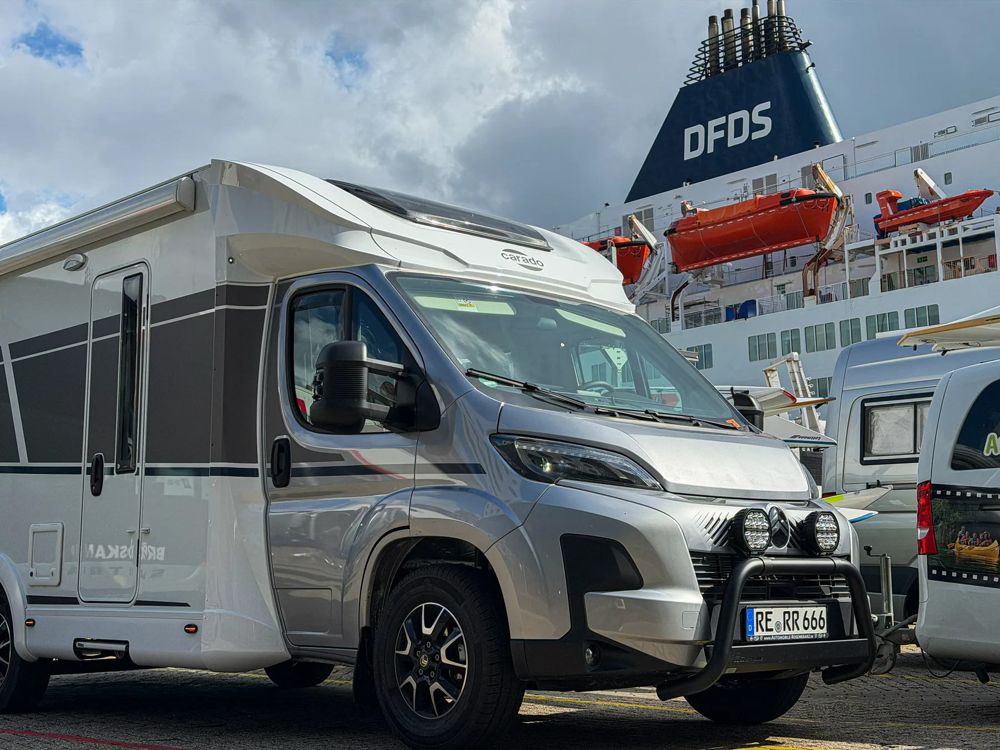
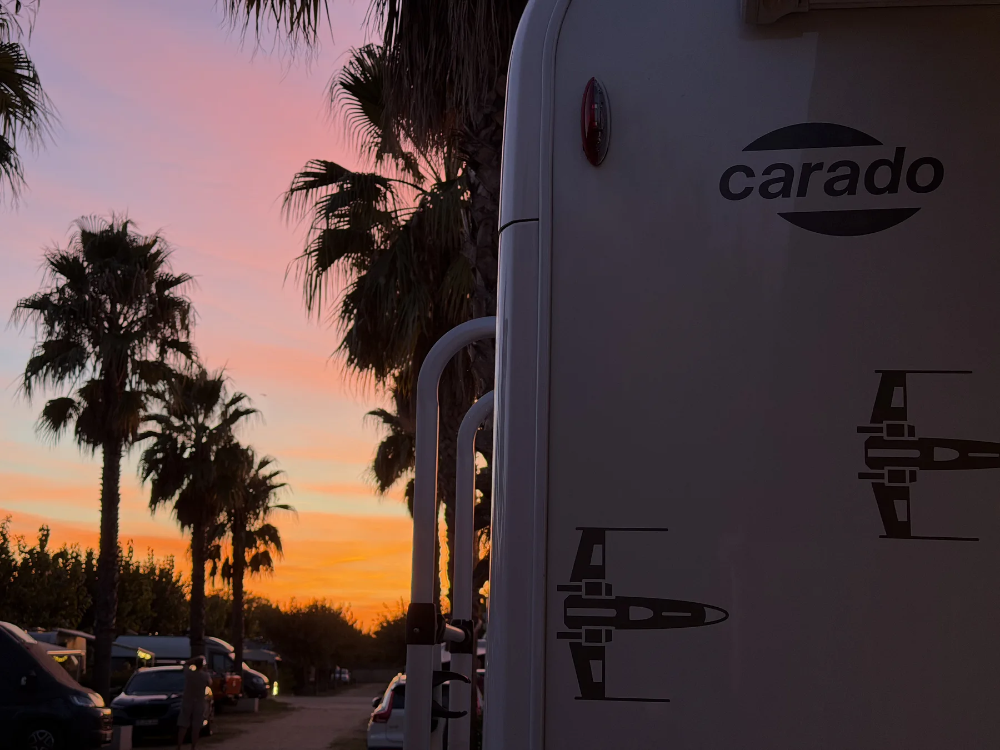
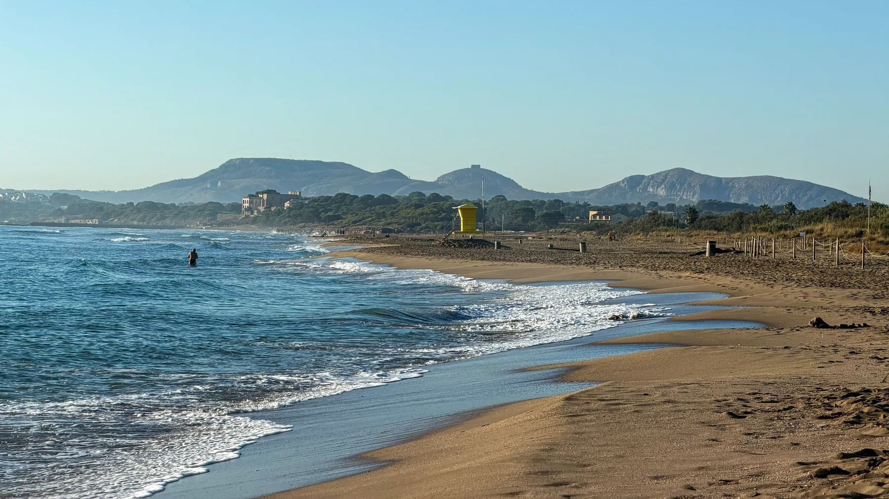
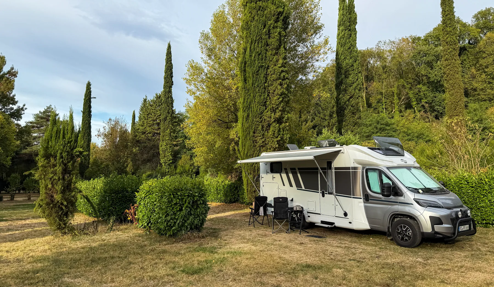
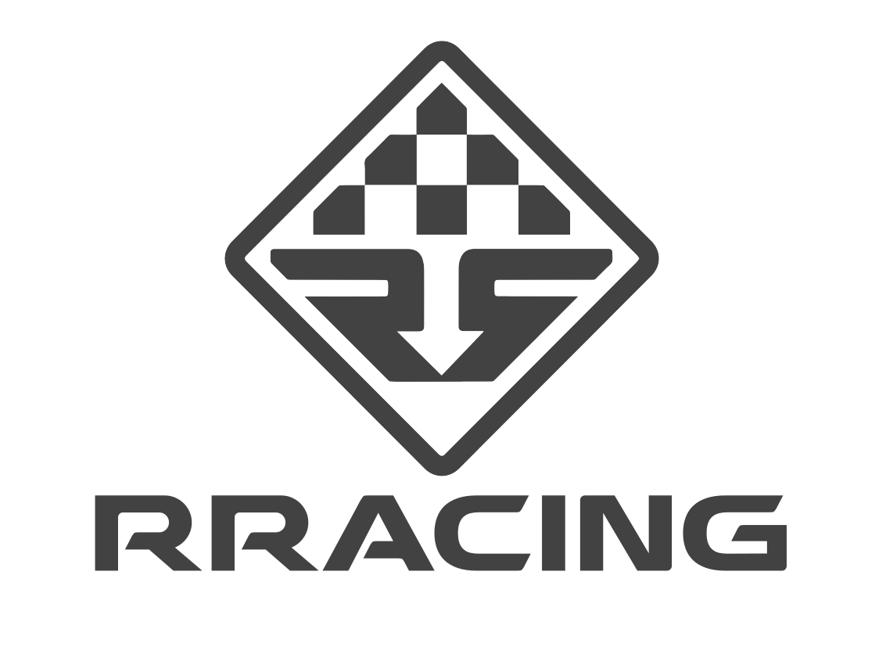
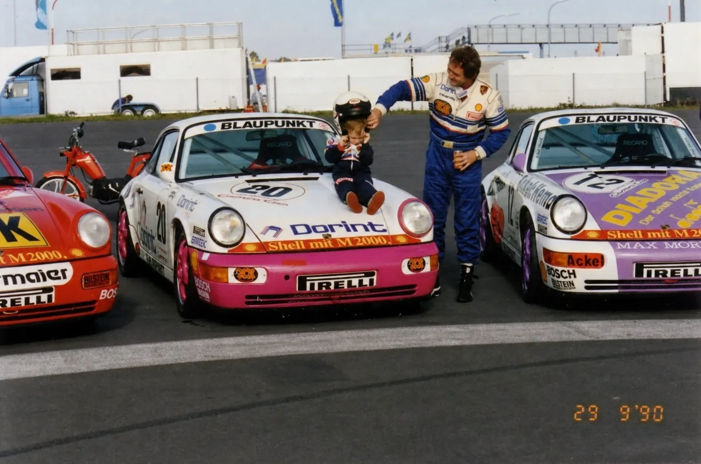
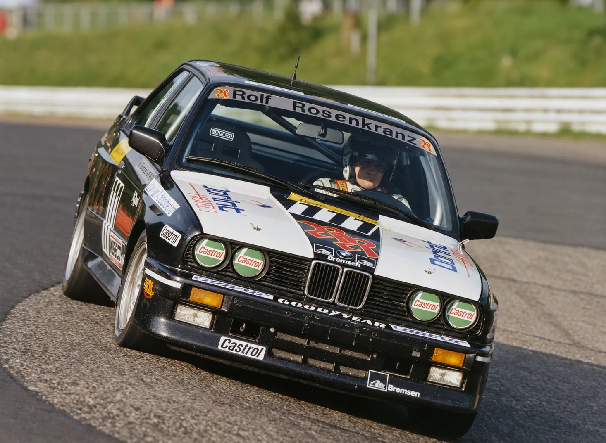

Tuning & Individualisierung
Erfahrung aus dem Sport und persönliche Betreuung für Sie. Sprechen Sie mit uns über Ihre Ziele – ob Design oder Technik. Wir erreichen diese gemeinsam.
Mit dem Wohnmobil neue Wege entdecken. Dem eigenen Fahrzeug eine persönliche Note geben. Bei uns beginnt beides mit Begeisterung.







Wir kennen die Vorfreude auf die nächste Reise – und den Wunsch, sich unterwegs auf sein Fahrzeug verlassen zu können.
In unserer Werkstatt kümmern wir uns um die Fahrzeugtechnik Ihres Wohnmobils. Wir prüfen mit Ihnen, was vor der nächsten Tour ansteht.
Sie suchen ein anderes Wohnmobil? Über unser starkes Netzwerk verlässlicher Partner vermitteln wir Ihnen gerne eine passende Lösung mit konkreten Angeboten – auch individuell auf Ihre Wünsche abgestimmt.

Seit 1992 steht Rosenkranz in Recklinghausen für automobile Begeisterung. Die Verbindung zum Motorsport reicht noch weiter zurück.
Mit RRacing bringen wir unsere Erfahrung und Freude am Besonderen zusammen: für Kundensport, Tuning, Fahrtrainings und die Weiterentwicklung Ihres Fahrzeugs.
Über Ihr Projekt sprechen ↗
Erfahrung aus dem Sport und persönliche Betreuung für Sie. Sprechen Sie mit uns über Ihre Ziele – ob Design oder Technik. Wir erreichen diese gemeinsam.
Die eigene Fahrfreude weiterentwickeln. Wir sind Ihr Ansprechpartner und geben Ideen für die Weiterentwicklung Ihres Fahrzeugs: vom ersten Gespräch bis zur Abstimmung eines individuellen Projekts.

Motorsport gehört zur Geschichte der Familie Rosenkranz. Diese Leidenschaft prägt bis heute unseren Blick auf besondere Fahrzeuge.
Vom nächsten Campingurlaub bis zur persönlichen Fahrzeugidee: Erzählen Sie uns von Ihrem Vorhaben. Wir besprechen gemeinsam die Möglichkeiten.
Wohnmobil- und Motorsportaufnahmen: Rosenkranz Bildarchiv. VANDERER Außenaufnahme: VANDERER GmbH / Simon Abele.